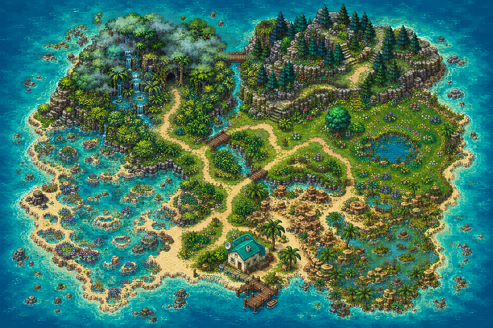

LINGYE · FIELD EXPEDITION

THE FIELD COMPENDIUM
从外形线索出发，读懂生命的分类。
RESEARCH NOTEBOOK
完成三卷图鉴，成为生命群岛的自然研究员。
有种子 → 无果皮：裸子植物 / 有果皮：被子植物
无种子 → 无根茎叶分化：藻类
有茎叶、只有假根：苔藓 / 有真正根和输导组织：蕨类
无脊柱 → 比较对称方式、体节、外套膜、外骨骼。
有脊柱 → 比较体表、呼吸、生殖与体温。
自动保存在此浏览器；换设备前可导出存档。